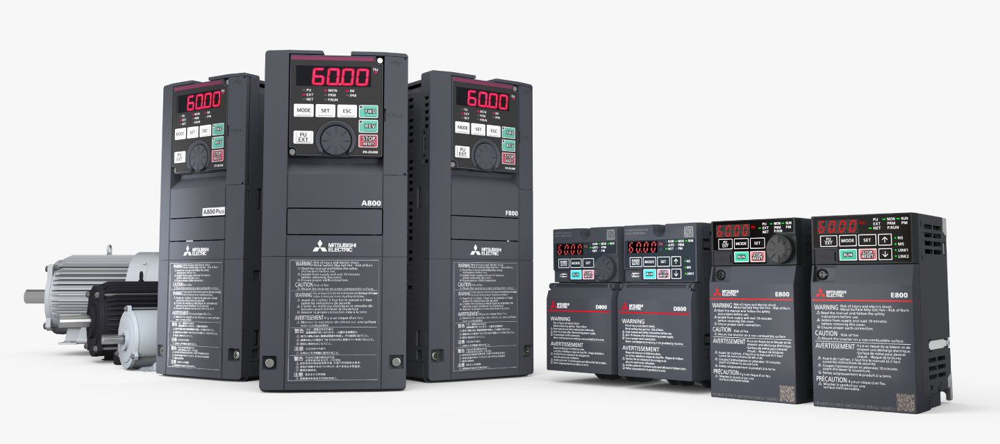
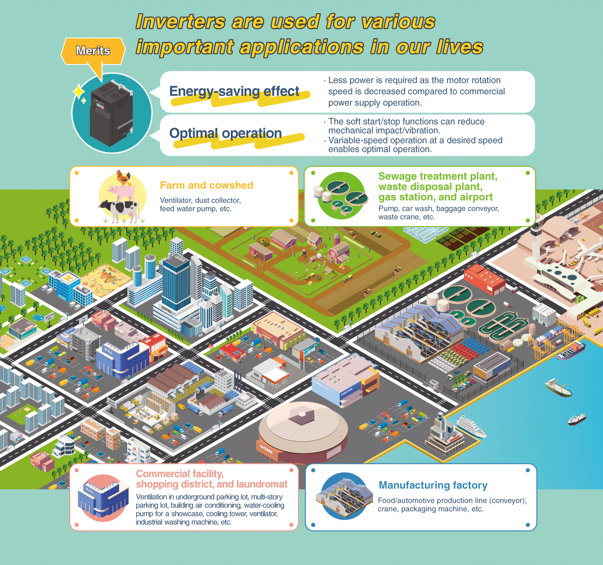
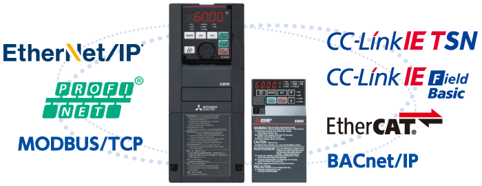

Fitur Produk Inverter-FREQROL Fitur Utama


Fitur Utama


Hemat energi
Dibandingkan dengan operasi catu daya komersial, penghematan energi yang signifikan dapat diperoleh dengan mengurangi kecepatan putaran.
Model inverter yang mendukung motor berikut tersedia.
- Motor serba guna dengan efisiensi premium IE3 (SF-PR)
- Motor IPM setara dengan efisiensi super premium IE4 (MM-EFS)
 *1: Output motor yang dinilai adalah 100%
*1: Output motor yang dinilai adalah 100%

Perawatan peralatan
Waktu henti peralatan akan berkurang dengan menggunakan fungsi perawatan prediktif/preventif untuk inverter dan perangkat periferal, serta menggunakan fungsi diagnosis inverter.
- Fungsi diagnosis masa pakai
Masa pakai yang tersisa dapat diperkirakan untuk komponen seperti kapasitor sirkuit utama, kapasitor sirkuit kontrol, dan sirkuit pembatas arus masuk dengan memeriksa kerusakannya. - Fungsi deteksi kesalahan karakteristik beban/fungsi deteksi arus keluaran
Ketika kesalahan mekanis terjadi selama pengoperasian konveyor/kipas/pompa, inverter mengeluarkan peringatan atau mematikan keluaran untuk mencegah kerusakan sistem - Pengatur waktu perawatan/monitor hitungan mulai
Pemantauan jam operasi berkontribusi pada perawatan preventif.
IoT
Koneksi real-time dengan sistem IT host memungkinkan pemantauan operasi terpusat atau jarak jauh, yang selanjutnya menyederhanakan produksi.
- CC-Link IE TSN
Pengumpulan data produksi real-time dimungkinkan oleh komunikasi berkecepatan tinggi dan stabil. - Multi-protokol didukung
Inverter multi-protokol dan opsi komunikasi tersedia untuk mendukung jaringan Ethernet/lapangan industri global utama, mencapai fleksibilitas yang lebih besar dan memfasilitasi pemeliharaan dan dukungan teknis.
